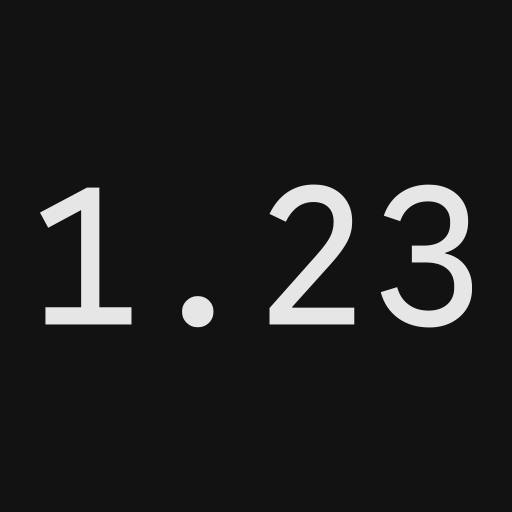
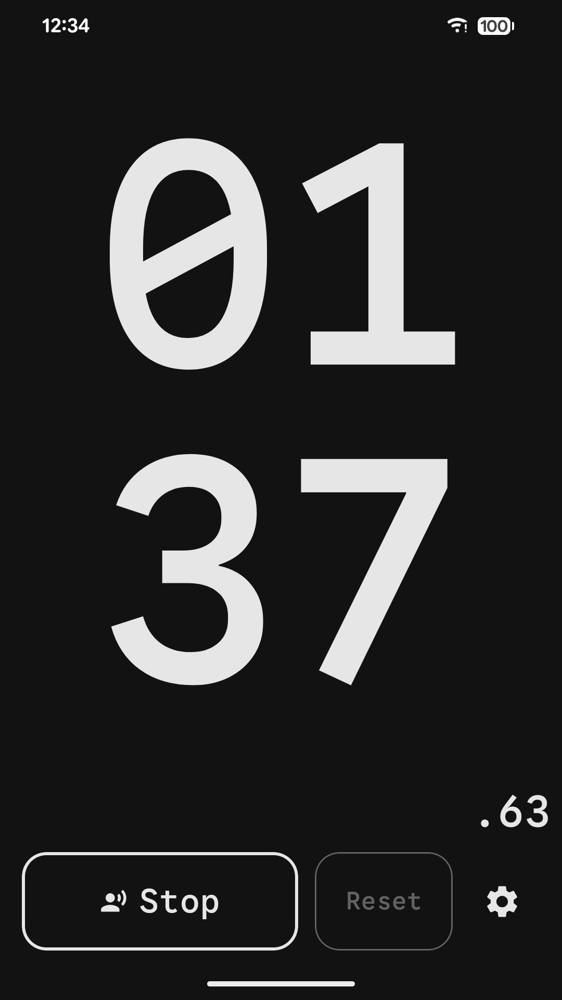
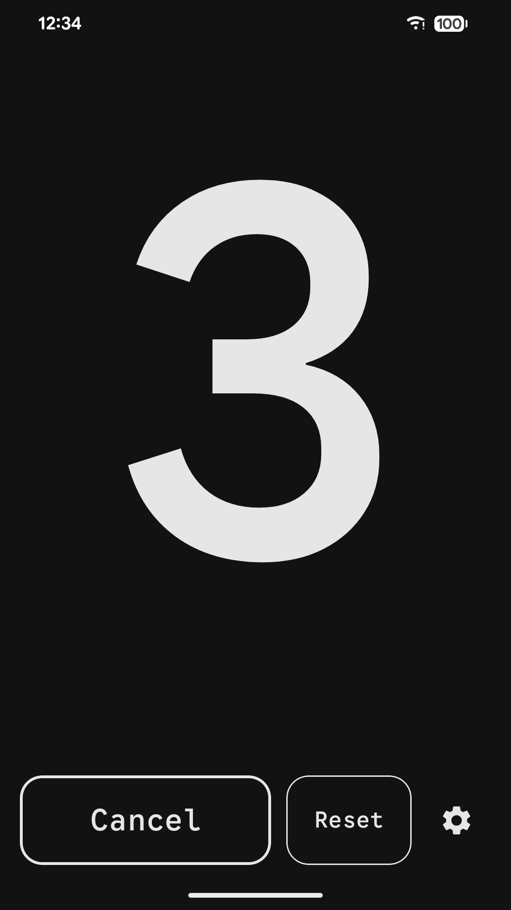
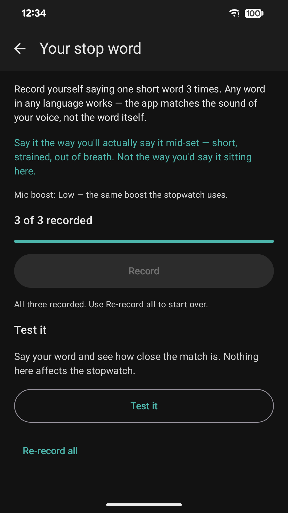
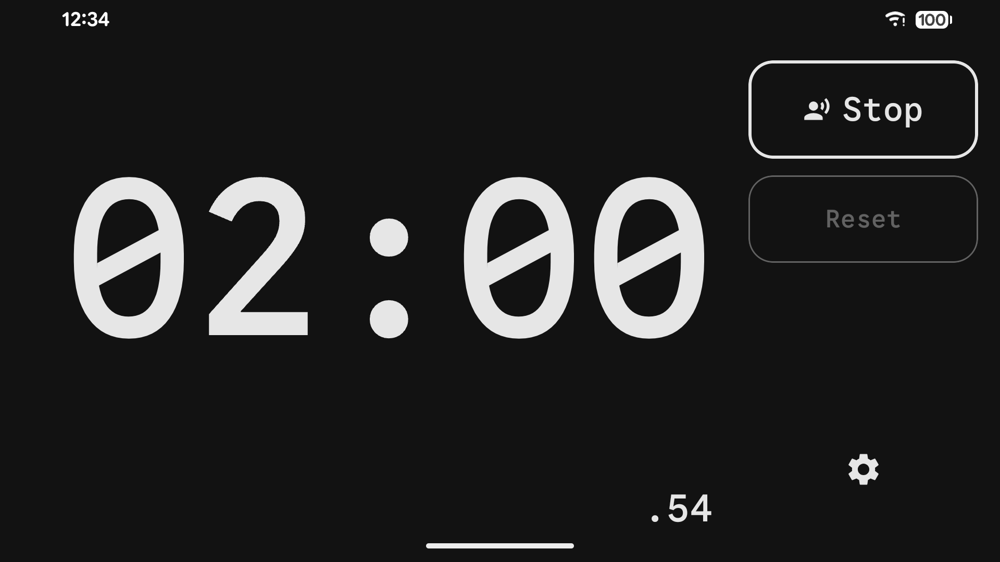

Huge, readable time. Two buttons. Stop it with your voice. Works offline.
ANDROID · COMING TO GOOGLE PLAY
iOS · COMING TO THE APP STORE
I do dead hangs. Up on the bar I could not read the digits on any stopwatch I tried, I could not reach the phone to start or stop it, and I could not tell how long I had been hanging without dropping off to look.
So Mega Stopwatch does four things about it. The time fills the whole screen, so I can read it from the bar. A countdown before the start gives me a few seconds to get a proper grip. It speaks the elapsed time aloud, so I never have to look at all. And when the hang is over, I stop it by saying a word — no hands.
The time fills the whole screen and resizes itself to fit — portrait or landscape, phone or tablet. A small hundredths read-out sits in the corner for when the difference matters.
Start and Reset. That is the entire interface. Reset stays disabled while the clock runs, so a stray thumb cannot wipe a session.
Voice stop ends a run when it hears you — any loud sound, or your own recorded word. It is all worked out on your phone, and no recording is ever saved.
Up to 60 seconds before the clock starts, and a separate delay before it resumes, so you have time to get into position. The last three seconds can be spoken, beeped or vibrated.
Have the elapsed time spoken aloud every 5 to 60 seconds — conversationally, not digit by digit — so you never have to look.
No analytics, no advertising, no sign-in, no tracking. It does not request internet permission at all, so it could not connect anywhere even if it tried.




How well it works is mostly decided in the thirty seconds you spend recording your word.
Not your sofa voice. Get properly out of breath first, then record — strained, clipped, short. That is what the app will have to recognise later.
Same room, same distance, phone in the spot you actually leave it. A word that matches on the kitchen table may not match across a gym.
One at the very end of a hold, one mid-effort, one closer to normal. The app takes the best match, so a varied set widens what it accepts.
Nudge Sensitivity towards Lenient, and turn Mic boost up when the phone is across the room. Re-recording out of breath fixes it more often than either.
Nudge Sensitivity towards Strict and Mic boost down — boost amplifies the gym as well as you. In a loud room, a recorded word beats Loud voice.
Say your word and it tells you whether that would have stopped the clock. Test it out of breath, in the real place. Passing on the sofa proves very little.